—Sommaire
- 1Contexte et objectifsAPI LogiAI et périmètre de l'atelier
- 2Activité 1 — Casser l'APICinq requêtes refusées, codes 422 et 404
- 3Activité 2 — Deux bugs de validationBornes, tests et corrections
- 4Sprint 1 — Protéger l'API par clé401, 403, rôles et secret hors Git
- 5Sprint 2 — Client web et CORSFetch, erreurs lisibles et preuve navigateur
- 6Tests, qualité et résultats52 tests, Ruff et synthèse
- 7Questions de compréhension401/403/422, secret, compare_digest, CORS
- 8ADR 003 — SécuritéEn-tête X-API-Key et origines précises
- 9Conclusion et livrablesBilan, limites et prochaines étapes
docs/images/atelier4/
sont reproduites dans ce document, avec leur contexte et leur légende.
1.Contexte et objectifs
L'API LogiAI prédit le risque de retard d'une livraison à partir de sept variables : distance, poids, heure de départ, pluie, trafic, nombre d'arrêts et type de véhicule. L'atelier 4 consiste à la tester jusqu'à la casser, à corriger les bugs révélés, puis à la sécuriser et à l'appeler depuis un client web.
Objectifs de l'atelier
- Écrire des tests qui envoient des requêtes invalides et vérifient les codes HTTP attendus.
- Tester les deux côtés de chaque borne pour révéler les bugs de validation Pydantic.
- Protéger
/v1/predictpar une clé API et/v1/model-infopar un rôle administrateur. - Configurer CORS pour autoriser uniquement l'origine du client web prévu.
- Appeler l'API depuis une page web, afficher les erreurs 401 et 422 de façon lisible.
- Documenter les décisions de sécurité dans une ADR et produire un compte rendu reproductible.
Environnement de travail
| Élément | Valeur |
|---|---|
| Système | Windows, PowerShell 5.1 |
| Python | 3.11.9 dans le virtualenv .venv |
| API | FastAPI + Uvicorn, http://localhost:8000 |
| Validation | Pydantic, schémas Livraison et PredictionOut |
| Tests | pytest 9.2.0, TestClient FastAPI |
| Qualité | Ruff check et Ruff format |
| Client web | HTML/CSS/JavaScript, servi sur http://localhost:5500 |
Une API qui accepte tout n'est pas une API robuste. Les tests d'entrée, la validation du schéma, l'authentification et CORS sont quatre couches complémentaires : chacune répond à une question différente et aucune ne remplace les autres.
2.Activité 1 — Casser l'API
Le fichier tests/test_casser.py regroupe cinq requêtes volontairement
incorrectes avec @pytest.mark.parametrize. Chaque cas vérifie le code
HTTP réellement renvoyé par l'API. Toutes les requêtes sont envoyées avec la clé
utilisateur de test, sauf lorsque le cas teste justement l'absence de clé.
| Cas | Requête (corps ou URL) | Prévu | Obtenu |
|---|---|---|---|
| Champ manquant | POST /v1/predict sans poids_kg | 422 | 422 |
| Valeur absurde | POST /v1/predict avec poids_kg = 99999 | 422 | 422 |
| Texte au lieu d'un nombre | POST /v1/predict avec distance_km = "cent" | 422 | 422 |
| Champ en trop | POST /v1/predict avec champ_inconnu = 10 | 422 | 422 |
| Mauvaise route | POST /v1/invalid_route | 404 | 404 |
Ce que ces tests démontrent
- Champ manquant : Pydantic refuse le corps incomplet avec un 422.
- Valeur absurde : la borne haute de
poids_kgest appliquée. - Type incorrect : une chaîne ne peut pas être convertie en nombre pour
distance_km. - Champ inconnu :
extra="forbid"dans le modèle refuse les champs non prévus. - Mauvaise route : l'API renvoie 404, et non 422, car la route n'existe pas.
Aucune requête du premier tableau n'a été acceptée alors qu'elle devait être refusée.
C'est l'activité 2, en testant les deux côtés de chaque borne, qui a révélé deux
valeurs impossibles acceptées par le schéma : heure_depart = 24 et
nb_arrets = -1.
Extrait du test paramétré
CAS = [
("valeur absurde", "/v1/predict", corps_absurde, 422),
("champ manquant", "/v1/predict", corps_sans_poids, 422),
("texte au lieu d'un nombre", "/v1/predict", corps_texte, 422),
("champ en trop", "/v1/predict", corps_en_trop, 422),
("mauvaise route", "/v1/invalid_route", corps_valide, 404),
]
@pytest.mark.parametrize("nom, route, corps, attendu", CAS)
def test_requete_refusee(client, headers_user, nom, route, corps, attendu):
r = client.post(route, json=corps, headers=headers_user)
assert r.status_code == attendu3.Activité 2 — Deux bugs de validation
Le fichier tests/test_limites.py contient 28 cas qui testent les bornes
basses et hautes de chaque champ. Cette méthode systématique a révélé deux bugs
volontairement laissés dans les schémas Pydantic.
| Bug | Test qui l'a révélé | Comportement avant | Correction |
|---|---|---|---|
| 1 | ("heure_depart", 24, 422) |
heure_depart = 24 était accepté (200) alors qu'une heure valide va de 0 à 23. |
heure_depart: int = Field(ge=0, le=23, ...) |
| 2 | ("nb_arrets", -1, 422) |
nb_arrets = -1 était accepté (200) car seule la borne haute le=15 était déclarée. |
nb_arrets: int = Field(ge=0, le=15, ...) |
Avant / après
Avant correction
heure_depart: int = Field(
ge=0, le=24, description="Heure de départ"
)
nb_arrets: int = Field(
le=15, description="Nombre d'arrêts"
)Après correction
heure_depart: int = Field(
ge=0, le=23, description="Heure de départ (0 à 23)"
)
nb_arrets: int = Field(
ge=0, le=15, description="Nombre d'arrêts"
)
Le cas heure_depart = 11.5 vérifie également qu'un nombre décimal est
refusé pour un champ déclaré int : Pydantic renvoie 422. Les deux bugs
sont désormais couverts par des tests de non-régression.
28 passed, 1 warning après correction. Le warning vient de Starlette/httpx et n'affecte pas les tests.
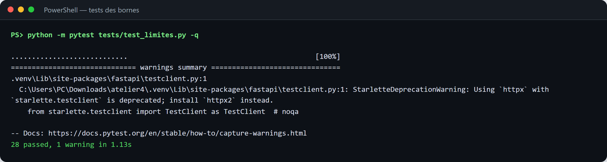
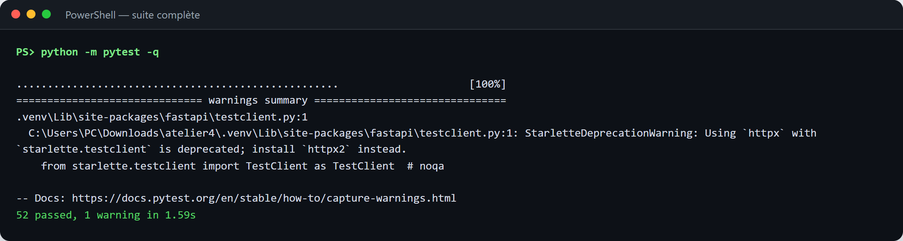
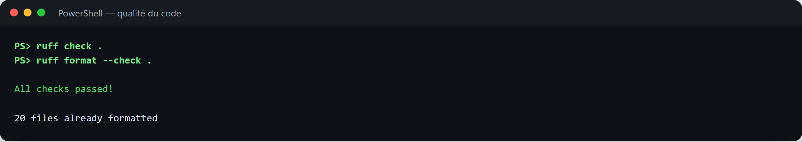
4.Sprint 1 — Protéger l'API par clé
Avant le sprint 1, POST /v1/predict sans clé renvoyait 200 : l'API était
ouverte à tous. Après protection, la même requête renvoie 401. La clé est lue depuis
l'environnement, jamais écrite dans le code source.
Authentification : verify_api_key()
def verify_api_key(x_api_key: str | None = Header(default=None)) -> str:
"""Authentification : renvoie le rôle ('user' ou 'admin') ou lève une 401."""
if not x_api_key:
raise HTTPException(
status_code=401,
detail="Clé API absente : renseignez l'en-tête X-API-Key.",
headers={"WWW-Authenticate": "ApiKey"},
)
if _egal(x_api_key, config.ADMIN_KEY):
return "admin"
if _egal(x_api_key, config.API_KEY):
return "user"
raise HTTPException(
status_code=401,
detail="Clé API invalide.",
headers={"WWW-Authenticate": "ApiKey"},
)Autorisation : require_admin()
def require_admin(role: str = Depends(verify_api_key)) -> str:
"""Autorisation : la clé est valide mais n'a pas forcément les droits (403)."""
if role != "admin":
raise HTTPException(
status_code=403,
detail="Droits administrateur requis pour cette route.",
)
return roleProtection des routes
@app.post(
"/v1/predict",
response_model=PredictionOut,
dependencies=[Depends(verify_api_key)],
)
def predict(livraison: Livraison):
...
@app.get("/v1/model-info", dependencies=[Depends(require_admin)])
def model_info():
...
/health reste public : il sert à la supervision et ne révèle aucun secret.
La comparaison des clés utilise secrets.compare_digest() pour éviter une
attaque temporelle.
Codes obtenus
| Requête | Clé | Code |
|---|---|---|
/health | Aucune | 200 |
/v1/predict | Aucune | 401 |
/v1/predict | Fausse clé | 401 |
/v1/predict | Clé utilisateur | 200 |
/v1/predict | Clé administrateur | 200 |
/v1/model-info | Clé utilisateur | 403 |
/v1/model-info | Clé administrateur | 200 |
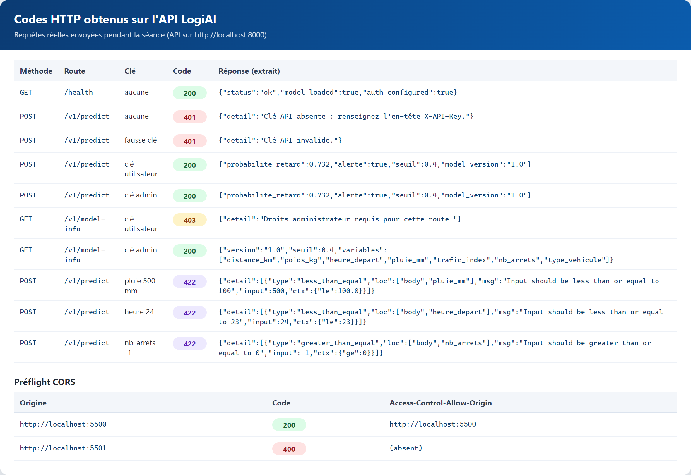
Preuves Swagger
/v1/predict sans clé : 401.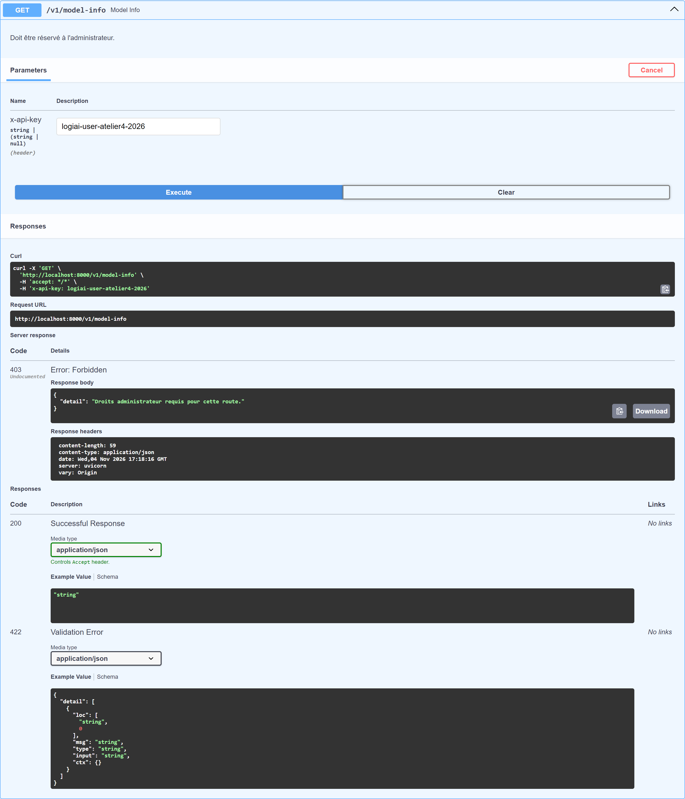
/v1/model-info avec clé utilisateur : 403.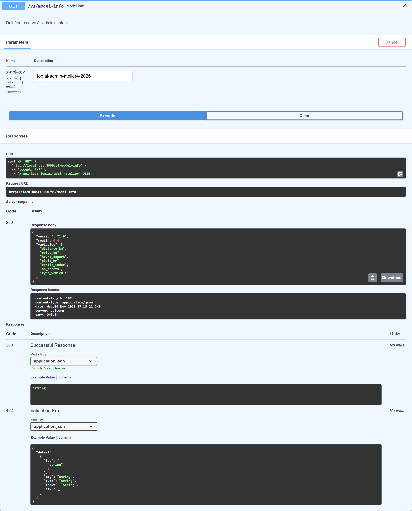
/v1/model-info avec clé admin : 200.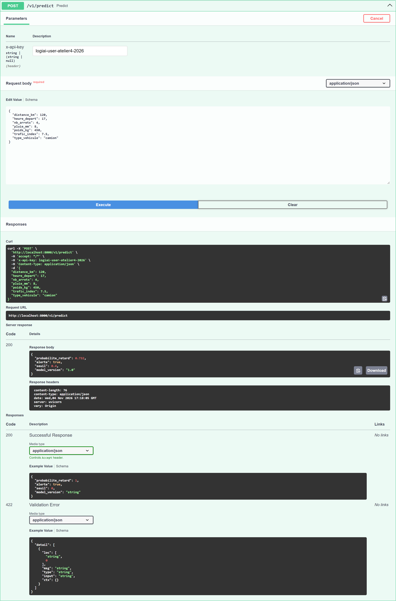
/v1/predict avec clé valide : 200 et prédiction.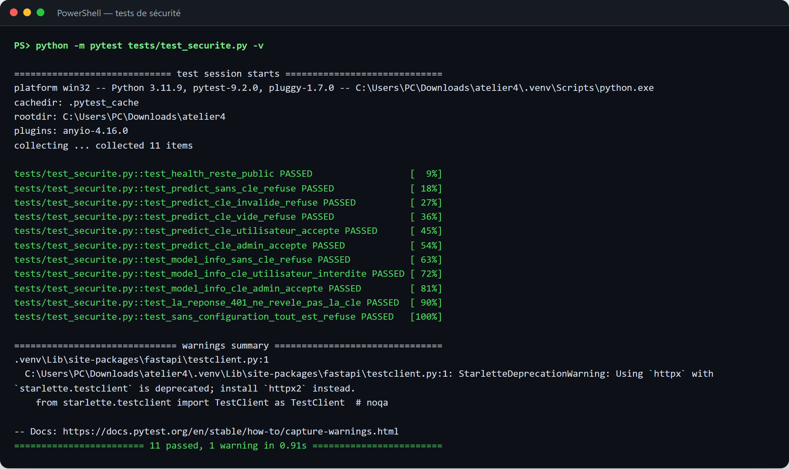
Le secret n'est pas dans Git
Le fichier .env contient les clés locales. Il est ignoré par Git, tandis
que .env.example est versionné avec des valeurs factices.
PS> git status --short # .env n'apparaît pas dans la liste PS> git check-ignore -v .env .gitignore:5:.env .env
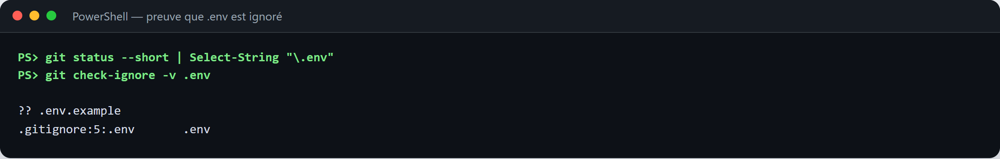
.env est ignoré par Git et que .env.example est le seul fichier suivi.5.Sprint 2 — Client web et CORS
Le client web/index.html propose un formulaire pour les sept variables,
un champ de clé API et un bouton « Évaluer ». La clé est saisie à chaque visite :
elle n'est écrite nulle part dans la page. Le bouton est désactivé pendant l'appel
et réactivé dans un bloc finally.
Appel fetch avec la clé dans l'en-tête
async function appelerApi(livraison, cle) {
const reponse = await fetch(API_URL, {
method: "POST",
headers: { "Content-Type": "application/json", "X-API-Key": cle },
body: JSON.stringify(livraison),
});
const corps = await reponse.json();
return { status: reponse.status, corps };
}Messages d'erreur lisibles
function messageErreur(status, corps) {
if (status === 401) return "Clé API absente ou invalide.";
if (status === 403) return "Vous n'avez pas les droits pour cette action.";
if (status === 503) return "Le service n'est pas prêt (modèle non chargé). Réessayez plus tard.";
if (status === 422 && Array.isArray(corps.detail)) {
const details = corps.detail.map((erreur) => {
const champ = erreur.loc.filter((partie) => partie !== "body").join(".");
return `${champ} : ${erreur.msg}`;
});
return `Données invalides. ${details.join(" | ")}`;
}
return `Erreur ${status}.`;
}Résultats affichés
| Scénario | Réponse | Affichage |
|---|---|---|
| Livraison normale | 200 | Probabilité de retard : 73.2 %. Alerte : livraison à risque. |
| Pluie de 500 mm | 422 | Données invalides. pluie_mm : Input should be less than or equal to 100 |
| Fausse clé | 401 | Clé API absente ou invalide. |
| Page servie sur 5501 | Blocage navigateur | API injoignable ou requête bloquée (CORS). Vérifiez qu'uvicorn est lancé et regardez la console F12. |
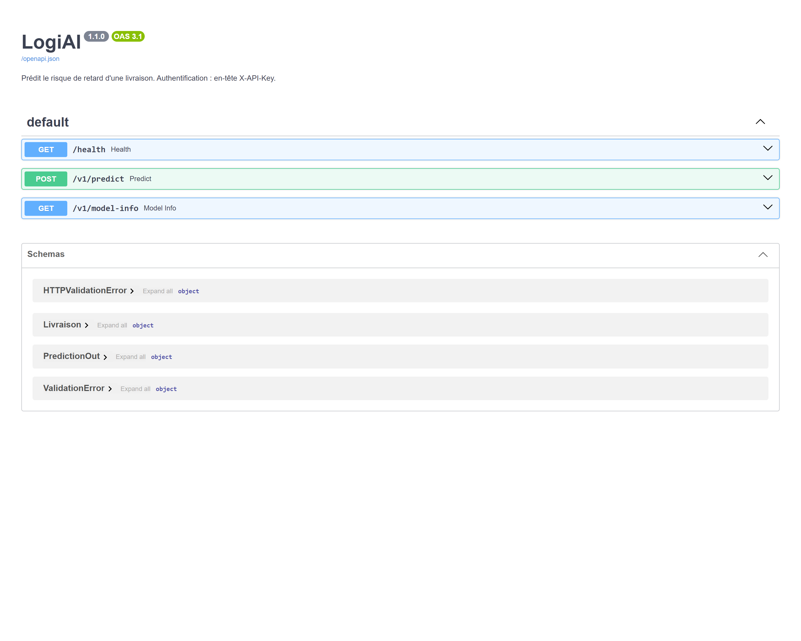
/docs.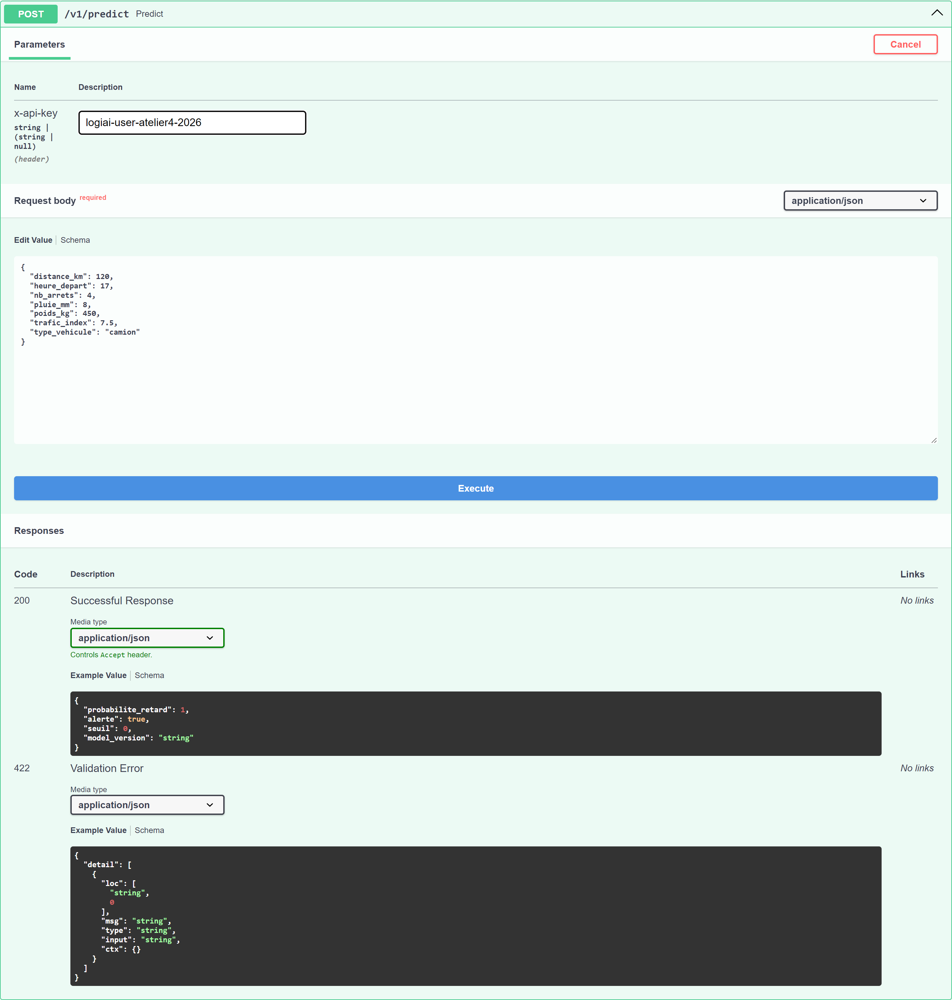
/v1/predict avec un corps JSON.Captures du client web
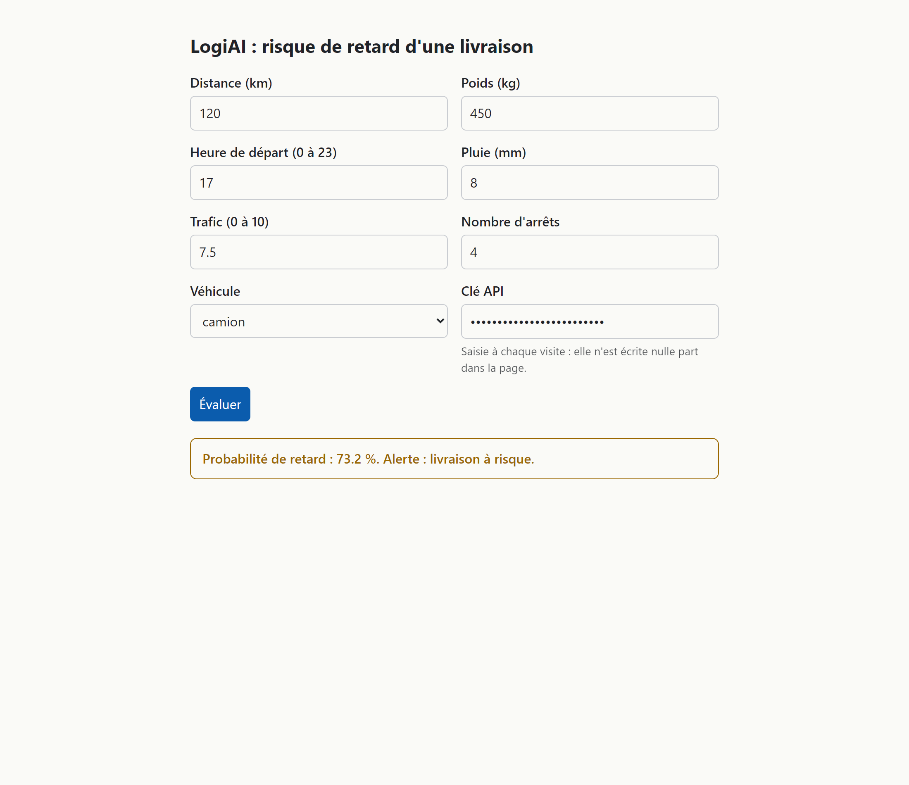
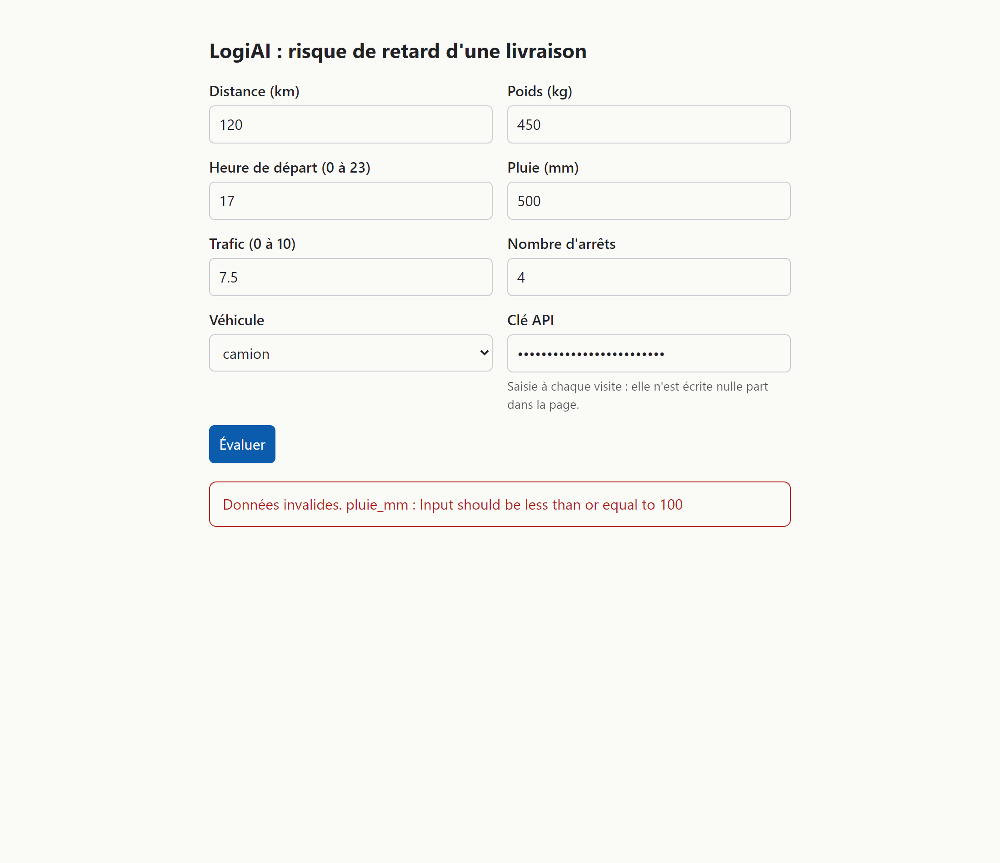
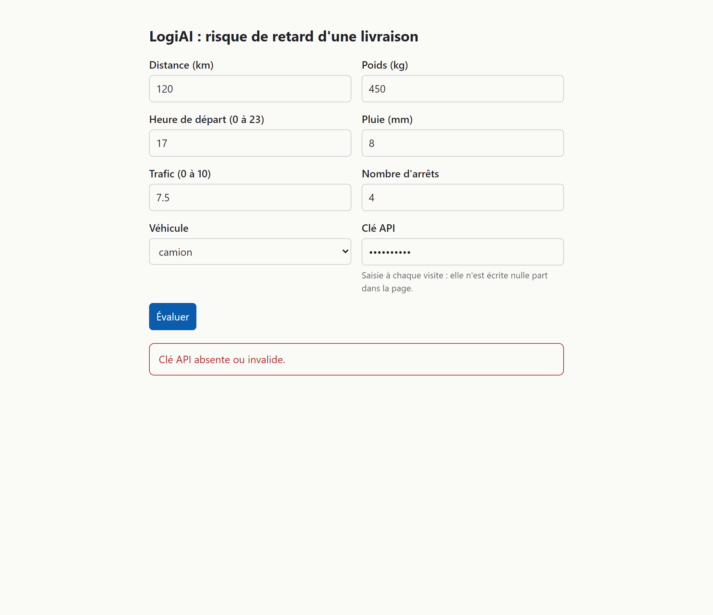
Expérience CORS sur le port 5501
La page servie sur http://localhost:5501 n'est pas dans la liste des
origines autorisées. Le navigateur bloque donc l'appel avant que le JavaScript puisse
lire la réponse. La page affiche le message CORS prévu, et la console F12 contient
le message exact du navigateur.
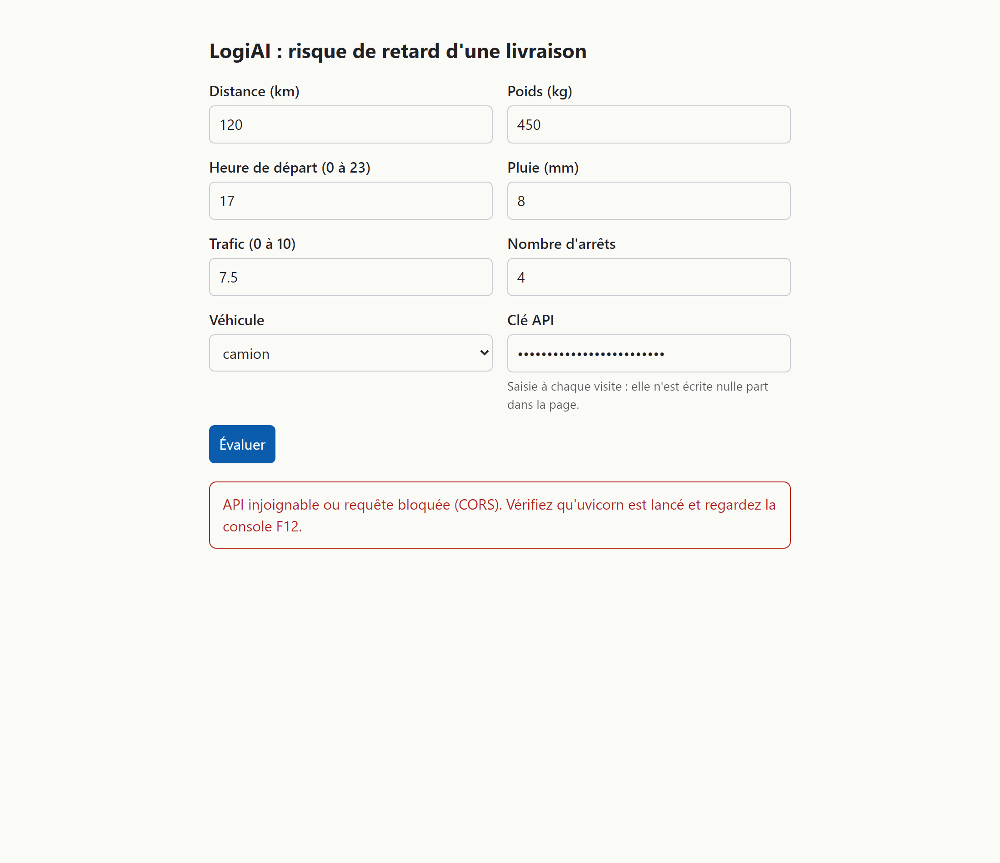
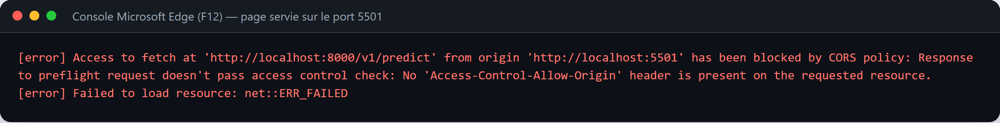
Access to fetch at 'http://localhost:8000/v1/predict' from origin 'http://localhost:5501' has been blocked by CORS policy: Response to preflight request doesn't pass access control check: No 'Access-Control-Allow-Origin' header is present on the requested resource.
La configuration CORS autorise précisément http://localhost:5500 et
http://127.0.0.1:5500, les méthodes GET, POST,
OPTIONS et les en-têtes Content-Type, X-API-Key.
Une origine 5501 reçoit une réponse 400 Bad Request avec
Disallowed CORS origin.
La clé dans l'onglet Network
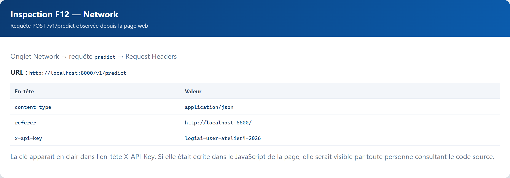
X-API-Key est visible en clair dans les en-têtes de la requête.curl fonctionne quand même
CORS est une règle appliquée par le navigateur, pas par l'API. curl
n'est pas un navigateur : il envoie la requête et lit la réponse sans contrôle
CORS. La clé API reste indispensable, même avec curl.
6.Tests, qualité et résultats
La suite complète contient 52 tests. Les tests d'API existants vérifient le fonctionnement nominal ; les nouveaux tests couvrent les entrées invalides, les bornes et la sécurité.
| Fichier | Rôle | Tests | Résultat |
|---|---|---|---|
tests/test_api.py | Non-régression de l'API et du modèle | 8 | OK |
tests/test_casser.py | Cinq requêtes volontairement incorrectes | 5 | OK |
tests/test_limites.py | Bornes basses et hautes de chaque champ | 28 | OK |
tests/test_securite.py | Authentification, autorisation et secret | 11 | OK |
| Total | Suite complète | 52 | 52 passed |
52 passed, 1 warning — le warning est une dépréciation Starlette/httpx, sans impact sur les résultats.
Qualité du code
PS> ruff check . All checks passed! PS> ruff format --check . 20 files already formatted
Synthèse des preuves
| Point vérifié | Preuve | Résultat |
|---|---|---|
| Validation des entrées | 5 cas de test_casser.py | 422 et 404 conformes |
| Bornes | 28 cas de test_limites.py | 2 bugs trouvés et corrigés |
| Authentification | 401 sans clé ou fausse clé | Refus systématique |
| Autorisation | 403 avec clé utilisateur sur /v1/model-info | Rôle admin requis |
| Secret | git check-ignore -v .env | .gitignore:5:.env |
| CORS | Origine 5500 acceptée, 5501 refusée | 200 avec ACAO, 400 sans ACAO |
| Client web | 200, 422, 401 et blocage CORS | Messages lisibles |
| Qualité | Ruff check et format | Aucune erreur |
7.Questions de compréhension
1. Quelle différence entre 401, 403 et 422 ?
401 Unauthorized : le client n'est pas authentifié, car la clé est
absente ou fausse. 403 Forbidden : le client est authentifié, mais
son rôle ne permet pas l'action, par exemple une clé utilisateur sur
/v1/model-info. 422 Unprocessable Entity : les données
sont bien envoyées, mais elles ne respectent pas le schéma : champ manquant, valeur
hors bornes ou type incorrect.
2. Pourquoi la clé n'est-elle ni dans le code ni dans Git ?
Parce que tout ce qui est commité reste dans l'historique Git, même après suppression
du fichier. Une clé dans le code serait lisible par toute personne ayant accès au
dépôt. Le fichier .env est lu au démarrage, ignoré par Git, et les
secrets peuvent être fournis par l'environnement en production.
3. Pourquoi comparer avec compare_digest plutôt qu'avec == ?
== s'arrête dès le premier caractère différent : le temps de réponse peut
révéler combien de caractères de la clé sont corrects, ce qui ouvre une attaque
temporelle. secrets.compare_digest compare en temps constant et ne donne
pas cette information.
4. Pourquoi curl fonctionne-t-il alors que la page du port 5501 est bloquée ?
Le blocage vient du navigateur qui applique la politique CORS. curl
n'est pas un navigateur et ne vérifie pas Access-Control-Allow-Origin.
CORS protège l'utilisateur d'une page malveillante, pas l'API elle-même.
5. Pourquoi la validation faite par le navigateur ne remplace-t-elle pas celle de l'API ?
Le navigateur peut vérifier les champs HTML (required,
type="number"), mais un client peut envoyer n'importe quel JSON avec
curl, un script ou un autre langage. L'API doit donc toujours valider
elle-même les données avec Pydantic, car c'est elle qui protège le modèle et les
données.
8.ADR 003 — Sécurité
L'ADR documente deux décisions structurantes : le transport de la clé et la liste des origines CORS autorisées.
Décision 1 — Où transmettre la clé ?
X-API-Key
L'en-tête sépare clairement le secret des données métier et permet au serveur de le vérifier avant même de lire le corps de la requête.
- Dans l'URL : la clé serait enregistrée dans les journaux du serveur, l'historique du navigateur, les proxies et l'en-tête
Referer. Un simple partage de lien suffirait à la divulguer. - Dans le corps : la clé serait mélangée aux données métier, recopiée dans les journaux applicatifs et les traces de débogage, et plus difficile à retirer des exemples de requêtes.
Décision 2 — Quelles origines autoriser ?
http://localhost:5500 et http://127.0.0.1:5500, avec les
méthodes GET, POST, OPTIONS et les en-têtes
Content-Type, X-API-Key.
- Avec
*: n'importe quel site pourrait faire lire à un navigateur les réponses de l'API. La clé resterait nécessaire, mais une page malveillante pourrait utiliser une clé volée ou inciter l'utilisateur à appeler l'API. - Avec
*: l'envoi de cookies d'authentification (allow_credentials) est interdit et les méthodes et en-têtes réellement utiles ne peuvent pas être restreints. - Avec une liste précise : le moindre privilège est appliqué. Le coût est qu'il faut modifier la configuration et redémarrer l'API pour ajouter une nouvelle origine.
app.add_middleware(
CORSMiddleware,
allow_origins=config.ALLOWED_ORIGINS,
allow_methods=["GET", "POST", "OPTIONS"],
allow_headers=["Content-Type", "X-API-Key"],
)9.Conclusion et livrables
L'API LogiAI est désormais testée, corrigée et protégée. Les tests ont révélé deux bugs de bornes qui ont été corrigés, la clé API n'est plus stockée dans le code ni dans Git, les routes sensibles vérifient le rôle, et le client web affiche des messages compréhensibles pour les cas 200, 401, 422 et CORS.
Bilan
- Validation Pydantic : champs manquants, valeurs absurdes, types incorrects et champs inconnus refusés.
- Deux bugs de bornes trouvés par les tests et corrigés :
heure_departetnb_arrets. - Authentification par
X-API-Keyet autorisation administrateur sur/v1/model-info. - Clé absente du code et de Git ;
.envignoré,.env.exampleversionné. - CORS limité aux origines 5500, avec refus explicite de l'origine 5501.
- Client web fonctionnel, erreurs lisibles et clé visible dans l'onglet Network.
- 52 tests passent, Ruff check et format sont propres.
Livrables
| Livrable | Emplacement |
|---|---|
| Compte rendu | COMPTE_RENDU.md et ce PDF |
| ADR sécurité | docs/adr/003-securite.md |
| Code de sécurité | logiai/api/security.py |
| Routes et CORS | logiai/api/main.py |
| Schémas corrigés | logiai/api/schemas.py |
| Tests | tests/test_casser.py, test_limites.py, test_securite.py |
| Client web | web/index.html |
| Captures | docs/images/atelier4/ |
Prochaines étapes
- Créer la branche
tp-securite, pousser les changements et ouvrir la pull request. - Créer le tag
tp2après la fusion de la pull request. - Renseigner le lien de la pull request dans
COMPTE_RENDU.md.
PS> .venv\Scripts\python.exe -m pytest -q PS> .venv\Scripts\ruff.exe check . PS> .venv\Scripts\ruff.exe format --check .
Compte rendu Atelier 4 — BOUJRADA Younes — 4 novembre 2026